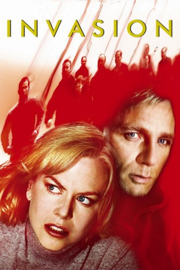
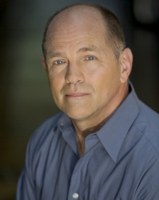

#8067 Invasion
Alternativ: The Invasion
 
 IMDB-Wertung: 5.9 / 10
IMDB-Wertung: 5.9 / 10  Metascore: 0
Metascore: 0 
Ein Space Shuttle fällt auf die Erde und zerschellt in der Atmosphäre, wodurch seine Trümmer in einem großen Gebiet verteilt werden. Tucker, ein Mitarbeiter des Weißen Hauses, untersucht den Absturz und entdeckt in den Trümmern eine außerirdische Lebensform. Der Wissenschaftler Ben Driscoll und seine Freundin Carol Bennell, eine früher mit Tucker verheiratete Psychiaterin, besuchen eine Party, auf der er zu einer Diskussion über die Grausamkeit des menschlichen Verhaltens kommt. Der anwesende russische Botschafter sagt, eine gewaltfreie Welt wäre nur dann möglich, wenn die Menschheit nicht mehr menschlich wäre.
Jahr: 2007
Dauer: 99 Minuten
FSK: 12
Land: USA Studio: Warner Bros.Tonspuren: DD5.1 - ,
Untertitel: Deutsch,
Auflösung: 1080p (1920x1080) Größe: 7639 MB
Genre: Thriller, Sci-Fi
Regisseur: Oliver Hirschbiegel, James McTeigue
Drehbuch: David Kajganich
Soundtrack: John Ottman
Darsteller:
 Nicole Kidman als Carol Bennell
Nicole Kidman als Carol Bennell Daniel Craig als Ben Driscoll
Daniel Craig als Ben Driscoll Jeremy Northam als Tucker Kaufman
Jeremy Northam als Tucker Kaufman- Jackson Bond als Oliver
 Jeffrey Wright als Dr. Stephen Galeano
Jeffrey Wright als Dr. Stephen Galeano Veronica Cartwright als Wendy Lenk
Veronica Cartwright als Wendy Lenk Josef Sommer als Dr. Henryk Belicec
Josef Sommer als Dr. Henryk Belicec Celia Weston als Ludmilla Belicec
Celia Weston als Ludmilla Belicec Roger Rees als Yorish
Roger Rees als Yorish- Susan Floyd als Pam
- Alexis Raben als Belicec's Aide
 Adam LeFevre als Richard Lenk
Adam LeFevre als Richard Lenk Joanna Merlin als Joan Kaufman
Joanna Merlin als Joan Kaufman- Ava Lenet als Mrs. Cunningham
- Luray Cooper als Cop in Tunnel
- Jeff Wincott als Transit Cop
- Wes Johnson als News Stand Vendor
- E. Parker Webb als Man in Rags
- Cloie Wyatt Taylor als Sobbing Teen
- John Colton als Field Reporter
- Michael Stone Forrest als Butler
- Timothy J. Scanlin Jr. als Subway Guy
- Darla Robinson als Crying Woman
- Jean Schertler als Elderly Lady
- James Bouchet als Security Guard
 Malin Akerman als Autumn (uncredited)
Malin Akerman als Autumn (uncredited)- James E. Ash als Snatcher at Tucker's House (uncredited)
- Nolan Bennett als Snatcher (uncredited)
- Darren Bevill als Arresting Police Officer (uncredited)
-  Pete Burris als Canine Cop (uncredited)
- Erin Leigh Bushko als Unchanged Citizen (uncredited)
- Ronnie Connell als Playground Kid Snatcher (uncredited)
 Patricia DiZebba als Body Snatcher (uncredited)
Patricia DiZebba als Body Snatcher (uncredited) Pamela Fischer als Snatcher (uncredited)
Pamela Fischer als Snatcher (uncredited)- Barney Fitzpatrick als NASA Scientist (uncredited)
- Jennifer Frappier als Snatcher (uncredited)
- Art Hall als Amtrak Conductor (uncredited)
 James A. Howard als Snatcher (uncredited)
James A. Howard als Snatcher (uncredited) Rick Kain als The News Annalist (uncredited)
Rick Kain als The News Annalist (uncredited) Aaron Michael Lacey als Train Passenger (uncredited)
Aaron Michael Lacey als Train Passenger (uncredited)- Kirk Lambert als Army General (uncredited)
- Vernon Lewis als Snatcher (uncredited)
- Keith Moyer als Unchanged Citizen (uncredited)
- Elizabeth O'Callaghan als Body Snatcher (uncredited)
 Vincent Riviezzo als Snatcher (uncredited)
Vincent Riviezzo als Snatcher (uncredited)- Derek A. Smith als DC Metro Police Officer (uncredited)
 Towanda Underdue als Snatcher (uncredited)
Towanda Underdue als Snatcher (uncredited)- Don Whatley als Snatcher (uncredited)
- Eric Benjamin als Gene
- Stephanie Berry als Carly
Datei: X:\2007(G-M)\Invasion (2007, FSK12, 1920x1080).mkv seit 21.01.2018
Festplatte: HD 2007(A-Z)-2008(A-F)
 Es gibt insgesamt 64 Filme in der Gruppe '2007(G-M)'
Es gibt insgesamt 64 Filme in der Gruppe '2007(G-M)'